名古屋市に
上野天満宮という神社がある。地元では
名古屋三大天神のひとつとされている名刹だ。
天満宮とは天神様こと菅原道真公を祀る神社である。
天神様と言えば今では受験の神様。
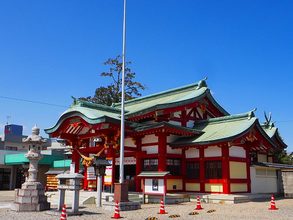
受験シーズンともなると日本中の受験生が志望校合格祈願のために日本中の天満宮、天神様に訪れる光景はある種の現代日本の風物詩といえよう。
で、上野天満宮である。
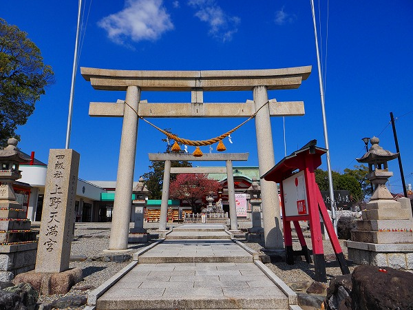
名古屋の市街地からも近く訪れる人も多いこの神社に一歩足を踏み入れてみると、どうも他の天神様とは様子が異なる。
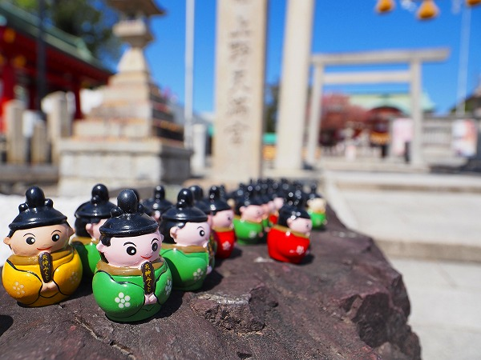
境内のあちこちに
小さな人形がみっしりと並んでいるのだ。
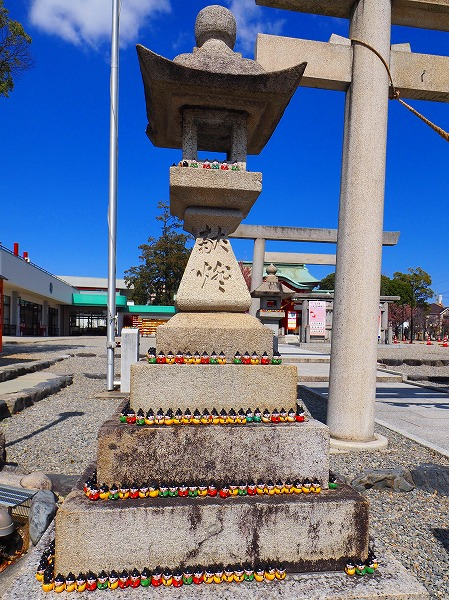
門前の燈籠にも御覧の通り。
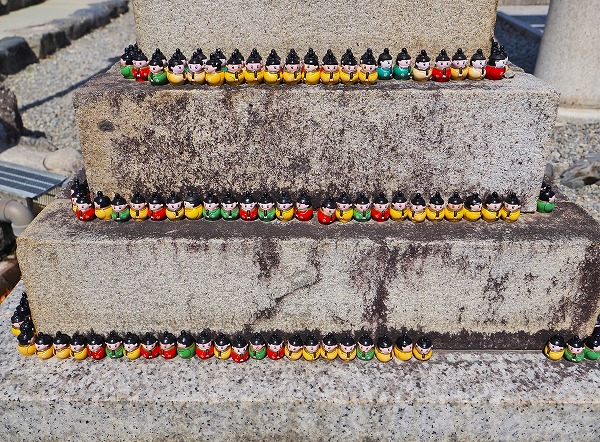
並べられるところには全部並べとけ！てな具合なのだ。
この人形は
菅原道真公を模したミニ道真君なのだ。
見ればミニ道真君は緑、黄、赤の三色がある。
そして顔もプロポーションもカワイくデフォルメされている。
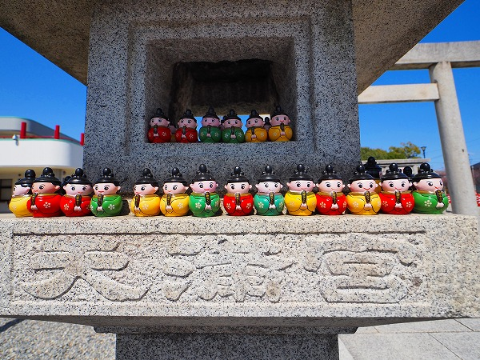
菅原道真といえば千年前に京を追われ大宰府にて無念の死を遂げ、その後、京に災いをおこしたとされる
日本史上屈指の「祟り神」である。
その後、災いを恐れた京都の人達が道真公を天神として祀り、後々に学問優秀であったことから学問の神様として人々の信仰を集めることとなったのが天満宮、天神信仰のベースである。
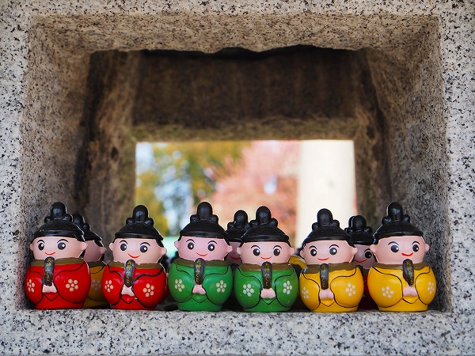
このような祟りが起源になっている信仰の事を
「御霊信仰」と言う。
特に平将門、崇徳天皇、そして菅原道真は日本三大怨霊とされ、時の権力者に畏れられた。
そしてその後も
恨みを持って死んだ人を畏れるマインドは長く日本の中世における信仰の中核を成す概念であった。
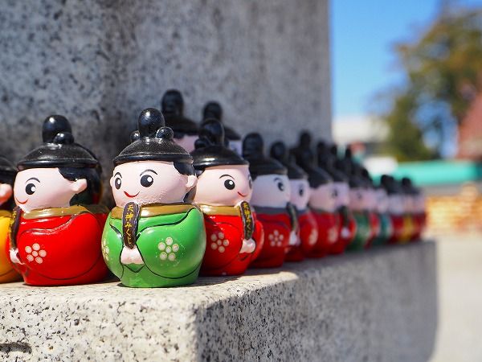
その約百年後、安倍晴明の一族の一部がこの名古屋の地に移って来た。
陰陽師として名声を馳せた安倍一族も晴明の死後、他家の台頭などもあり徐々に衰退していったという。
そんな中で京都から名古屋への処遇は恐らく都落ちだったのだろう。
名古屋に下った安倍氏の末裔は道真公を祀る天満宮を建立した。
それがこの上野天満宮なのだ。
都落ちした姿を
百年前の菅原道真に重ねていたのかも知れない。
そんな切ない歴史がこの天満宮の縁起には隠されているのだ。
百年前の強大な怨霊パワーを祀ることで自身の一族の復権をも夢見たのであろうか。
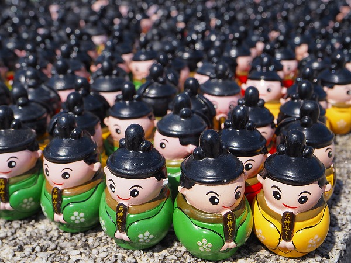
さて、改めて現在の上野天満宮の様子を見てみよう。
境内の至る所にミニ道真君がびっしりと並んでいる。
一体一体は笑みを浮かべたキュートな見た目だが、これだけ並ぶと少し不気味にも思えてくる。
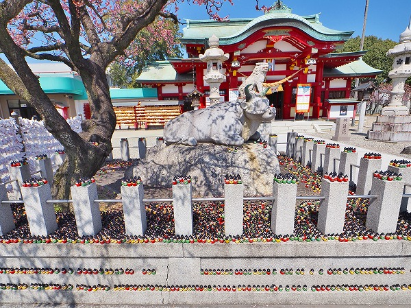
拝殿前には牛の石像がいる。
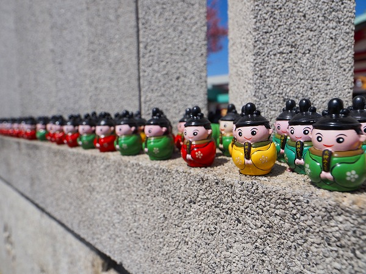
牛を囲う石柱の上にもこぼれ落ちそうな程ミニ道真君が密集していた。
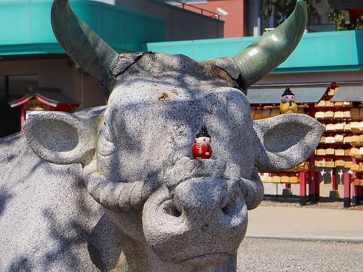
鼻先にまで置かれている。
足の踏み場もないほどに人形が密集している中心にある牛にでどうやって近づけたんだろう？不思議だ。
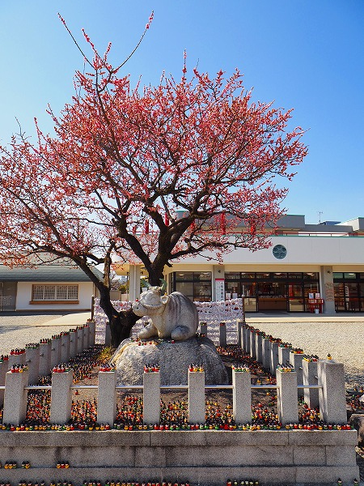
牛は道真公ゆかりの動物で、まず道真公が丑年生まれ、そして大宰府で亡く
なった道真公の遺体を牛で運ぶ途上、牛車がどうしても動かなくなり、そこに埋葬し、それが後の太宰府天満宮になったことから
牛を道真公の使いと見なすようになった。
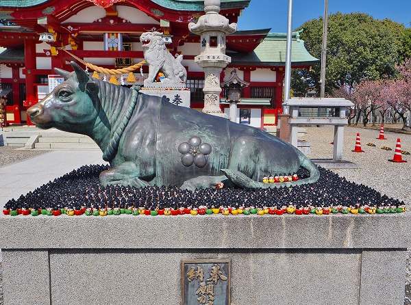
鋳造製の牛の像。
もちろんここにも大量の人形が隙間なく並んでいる。
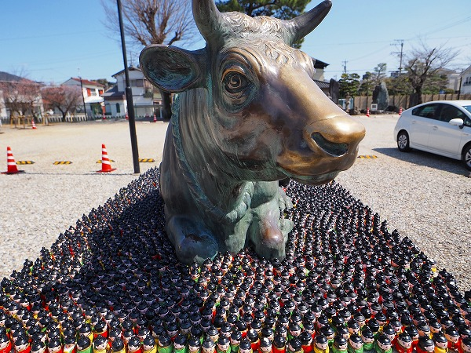
牛を撫でると御利益があるとされるので、牛の頭はピカピカに輝いている。
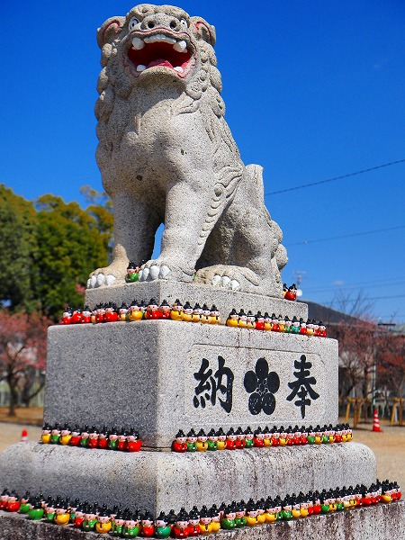
その先の狛犬にももちろん例の
3色に覆われていました。
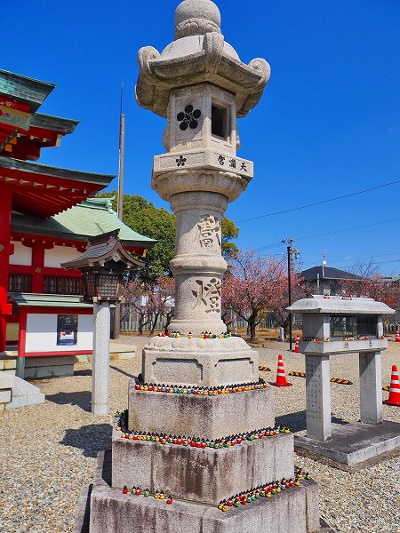
燈籠にも当然道真君が。
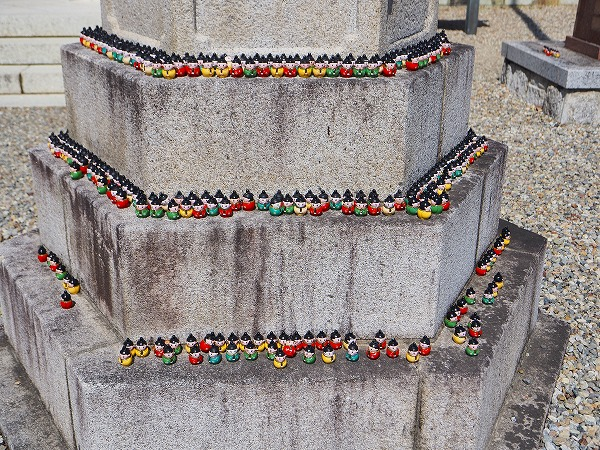
私も道真公の御利益を頂戴すべく社務所にお邪魔した。
ミニ道真君は実はおみくじになっていて、
胴体の中におみくじが入っているのだ。
神社の方の説明によると、ここに並べられている人形のほとんどは
願い事が叶った御礼に置いていったものだという。
天満宮へのお願いと言えば十中八九受験の願い事だろう。
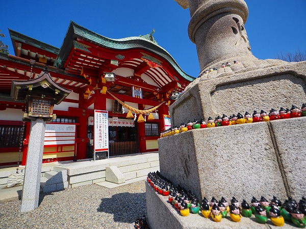
それでこれだけミニ道真君が並んでいるという事は・・・
相当の御利益がある！と解釈してよろしいのではないでしょうか？・・・
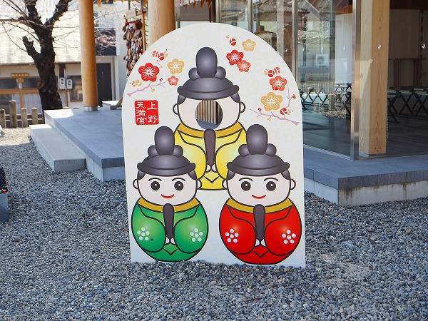
ちなみに緑、黄、赤の三色には特に意味はないそうです。
好きな色を選んでください、との事。
では目出度そうなので赤をチョイスさせていただきます。
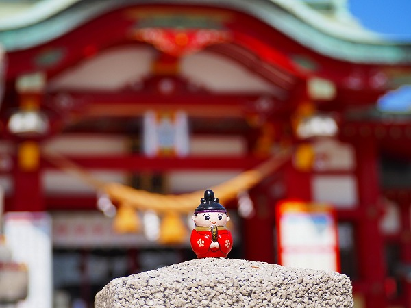
早速中を見ると「吉」と出た。
受験生、というには随分年を取っちゃったけど、人間ドックの検査結果に無事合格できた暁にはお礼参りにこの天満宮に道真君を奉納しに行く所存でございまする。
今回強く感じたのが
3色の人形が整然と並んでいた事。
いくら良い場所に置きたいと思っても
他の人形を落としてまでは置かないという暗黙のルールが徹底されていた。
なのでこれだけ大量にあるのに台座から落ちて転がっている人形はほぼなかった。
さすが
「落ちる」事には敏感な参拝者が多い神社だけありますね。